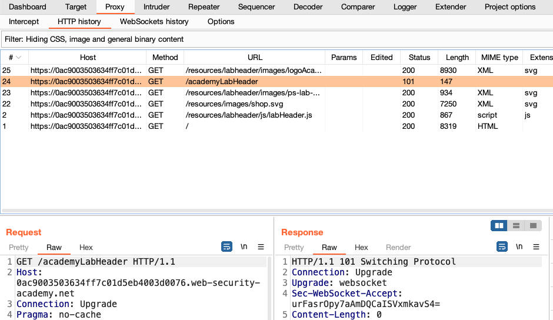

このチュートリアルでは、意図的に脆弱性を作り込んだライブWebサイトを使用して、Burp ProxyでHTTPリクエストをインターセプトし、変更する方法を学びます。
リクエストのインターセプト
Burp Proxyは、ブラウザと対象サーバ間で送信されるHTTPリクエストとレスポンスをインターセプトできます。これにより、さまざまな操作をしたときに、Webサイトがどのように動作するかを調査できます。
ステップ1: Burpの内蔵ブラウザを起動する
Proxy > インターセプトタブに移動します。
インターセプト無効ボタンをクリックすると、インターセプト有効に変わります。

ブラウザを開くをクリックします。これにより、Burpに内蔵されたChromiumブラウザが起動します。これはBurpと連動するようにあらかじめ設定されています。
Burpとブラウザの両方が見えるように、ウィンドウの位置を調整します。

ステップ2: リクエストをインターセプトする
内蔵ブラウザを使ってhttps://portswigger.netにアクセスしてみて、サイトが読み込まれないことを確認してください。Burp Proxyは、ブラウザが発行したHTTPリクエストを、サーバに到達する前にインターセプトしています。このインターセプトされたリクエストは、Proxy > インターセプトタブで確認できます。
リクエストはここにとどまっており、対象サーバに転送する前に調査や変更ができます。
ステップ3: リクエストを転送する
ブラウザにページが表示されるまで、転送ボタンを何度かクリックします。インターセプトされたリクエストとその後に発生したリクエストが送信されます。
ステップ4: インターセプトを無効にする
通常、ブラウザは多くのリクエストを送信するため、すべてのリクエストのインターセプトはしたくないでしょう。インターセプト有効ボタンをクリックすると、インターセプト無効と表示されます。
内蔵ブラウザに戻り、通常通りにサイトを操作できることを確認します。
ステップ5: HTTP履歴を表示する
Burpで、Proxy > HTTP履歴タブを開きます。インターセプトを無効にしていた場合でも、Burp Proxyを通過したすべてのHTTPトラフィックの履歴をここで確認できます。
履歴のいずれかのアイテムをクリックすると、生のHTTPリクエストと、それに対応するサーバからのレスポンスが表示されます。
これにより、通常通りにWebサイトを探索し、ブラウザとサーバの間のやり取りを後から調査できます。多くの場合その方が便利です。
Burp Proxyによるリクエストの変更
このセクションでは、Burp Proxyがインターセプトしたリクエストを変更する方法を学びます。これにより、Webサイトが想定していない方法でリクエストを操作した場合の反応を確認できます。"ラボ"と呼ばれる意図的に脆弱性を作り込んだWebサイトを使用して、実際の脆弱性を発見し、悪用する方法が確認できます。
Webセキュリティアカデミー
この先に進むにはportswigger.netのアカウントが必要です。まだ持っていない場合は、登録は無料で、Webセキュリティアカデミーへのフルアクセスが可能となります。
ステップ1: 内蔵ブラウザで脆弱性のあるWebサイトにアクセスする
Burpで、Proxy > インターセプトタブを開き、インターセプトが無効になっていることを確認します。
Burpのブラウザを起動し、それで次のURLにアクセスします:
https://portswigger.net/web-security/logic-flaws/examples/lab-logic-flaws-excessive-trust-in-client-side-controlsページが読み込まれたら、Access the labをクリックします。プロンプトが表示されたら、自分のportswigger.netのアカウントでログインしてください。数秒後、あなた専用の偽のショッピングサイトが表示されます。

ステップ2: ショッピングアカウントにログインする
ショッピングサイトで、My accountをクリックし、次の認証情報を使ってログインします。
ユーザ名: wiener
パスワード: peter
ちょうど100ドルのストアクレジットを持っていることに注目してください。
ステップ3: 買いたいものを探す
ホームをクリックすると、トップページに戻ります。オプションを選択すると、Lightweight "l33t" leather jacketの商品詳細が表示されます。
ステップ4: カートに入れる機能を調査する
Burpで、Proxy > Interceptタブを開き、インターセプトを有効にします。ブラウザで、レザージャケットをカートに入れて、POST /cartリクエストをインターセプトします。

注
ブラウザがバックグラウンドで何か他のことをしていると、最初にProxy > インターセプトタブに別のリクエストが表示されることがあります。この場合は、上のスクリーンショットにあるようにPOST /cartリクエストが表示されるまで転送をクリックします。
インターセプトされたリクエストを調べると、ボディにpriceというパラメータがあり、これが商品の価格(セント)と一致していることに気づきます。
ステップ5: リクエストを変更する
priceパラメータの値を1に変更し、転送をクリックすると、変更したリクエストがサーバに送信されます。
再度インターセプトを無効にして、以降のリクエストが中断せずBurp Proxyを通過できるようにします。
ステップ6: 脆弱性を悪用する
内蔵ブラウザで、右上のバスケットアイコンをクリックすると、カートが表示されます。ジャケットが1セントで追加されていることに注目してください。
注
Webインターフェースで価格を変更する方法はありません。この変更ができたのは、Burp Proxyのおかげです。
注文するボタンをクリックすると、非常にリーズナブルな価格でジャケットを購入できます。
おめでとうございます。Webセキュリティアカデミーの最初のラボを突破しました。また、Burp Proxyを使ってHTTPトラフィックをインターセプト、レビュー、変更する方法も学びました。
次のステップ - Burp Repeaterでリクエストを再発行する
次へこのチュートリアルの内容
- 初期インストール
- Burp ProxyによるHTTPトラフィックのインターセプト
- Burp Repeaterによるリクエストの再発行
- 初めてのスキャン実行